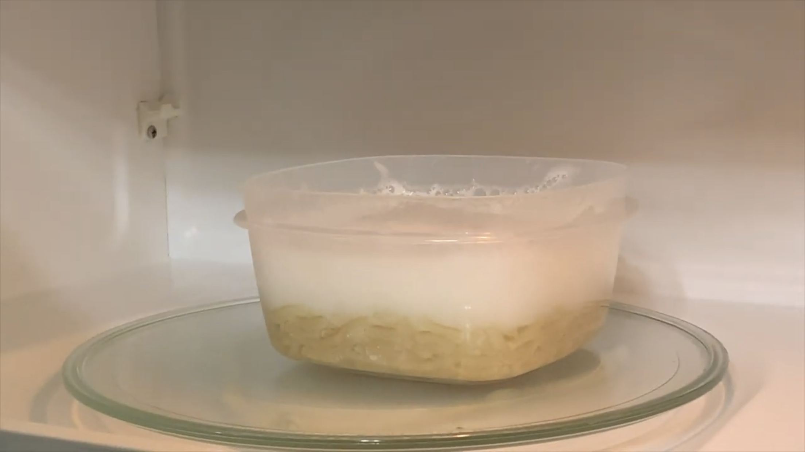

Step 1: Pour 1 box of macaroni into a microwave-safe bowl.

Step 2: Pour 1 cup of water into the bowl.

Step 3: Microwave on high for 4 ½ to 5 minutes or until macaroni is tender.

Step 4: Add cheese powder packet.

Step 5: Mix well.
Step 6: Add hot sauce (amount may vary based on your preferences).

Step 7: Mix well again.

Step 8: Let cool and serve!
Why did I choose this food?
I chose spicy instant macaroni and cheese because I don’t know how to cook anything, and this is one of the few things I actually know how to make. I made it spicy because normal mac and cheese is boring by itself. It’s a very simple process, but it is important to know how to make this in case the world is ending and all you have is Easy Mac. Spicy mac and cheese is a great snack for when you can’t stand to be out of bed for more than a few minutes!